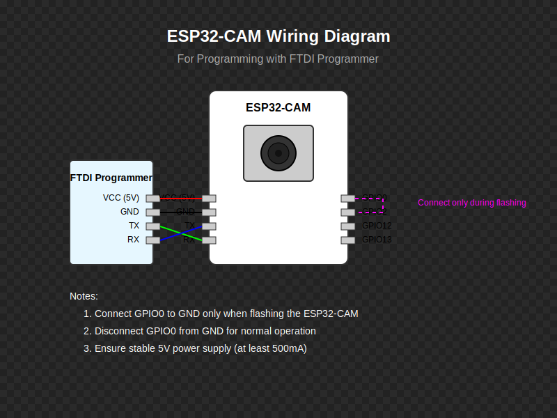

Prerequisites
Before you begin, make sure you have the following components and software:
Hardware Components
- ESP32-CAM module (AI Thinker or similar)
- FTDI programmer or USB-to-TTL converter
- Jumper wires
- Breadboard (optional, but helpful)
- 5V power supply
- Micro USB cable
- PC with WiFi capability
Software Requirements
- Arduino IDE (1.8.x or newer)
- ESP32 board support package
- Python 3.7 or newer
- Git (optional, for cloning the repository)
Hardware Setup
The ESP32-CAM needs to be connected to an FTDI programmer for flashing the firmware.
Wiring Diagram
Connection Steps
- Connect the ESP32-CAM to the FTDI programmer as follows:
ESP32-CAM FTDI Programmer 5V VCC (5V) GND GND U0R (TX) RX U0T (RX) TX GPIO0 GND (for flashing mode) - Connect the FTDI programmer to your PC using a USB cable
- Important: Connect GPIO0 to GND only during flashing. Disconnect it for normal operation.
Note: The ESP32-CAM requires a stable 5V power supply capable of providing at least 500mA of current.
Software Setup
Follow these steps to set up the required software environment.
Arduino IDE Setup
- Download and install the Arduino IDE from arduino.cc
- Open Arduino IDE and go to File > Preferences
- Add the following URL to the "Additional Boards Manager URLs" field:
https://raw.githubusercontent.com/espressif/arduino-esp32/gh-pages/package_esp32_index.json - Click "OK"
- Go to Tools > Board > Boards Manager
- Search for "esp32"
- Install "ESP32 by Espressif Systems" (version 2.0.0 or newer)
Required Libraries Installation
The ESP32-CAM code requires several libraries. Here's how to install them:
1. WebSockets Library
- Go to Sketch > Include Library > Manage Libraries
- Search for "WebSockets"
- Install "WebSockets by Markus Sattler" (version 2.3.0 or newer)
2. ESP32 Camera Library
The ESP32 camera libraries (esp_camera.h, img_converters.h) are included in the ESP32 board support package you installed earlier. You don't need to install them separately.
3. Other Required Headers
The other headers used in the code:
WiFi.h- Included in the ESP32 board support packagesoc/soc.h- Included in the ESP32 board support packagesoc/rtc_cntl_reg.h- Included in the ESP32 board support package
Verifying Installation
To verify that all libraries are installed correctly:
- Open Arduino IDE
- Go to File > Examples
- You should see "ESP32" and "WebSockets" in the examples list
Note: If you encounter any issues with library installation, see the Library Installation Issues section in the Troubleshooting Guide.
ESP32-CAM Setup
Now you'll program the ESP32-CAM with the firmware that enables video streaming.
Uploading the Firmware
- Clone the AI WiFi CAM repository:
git clone https://github.com/bobbyiscool123/AI-WIFI-CAM.git cd AI-WIFI-CAM - Open the Arduino sketch in the Arduino IDE:
esp32cam_code/esp32cam_stream.ino - Modify the WiFi credentials and server IP in the sketch:
const char* ssid = "YOUR_WIFI_SSID"; const char* password = "YOUR_WIFI_PASSWORD"; const char* serverIP = "192.168.1.100"; // Your PC's IP address - Select the correct board in Arduino IDE:
- Tools > Board > ESP32 Arduino > AI Thinker ESP32-CAM
- Select the correct port:
- Tools > Port > (select the port where your FTDI programmer is connected)
- Make sure GPIO0 is connected to GND for flashing mode
- Click the Upload button in Arduino IDE
- After successful upload, disconnect GPIO0 from GND
- Press the reset button on the ESP32-CAM
Important: After uploading, disconnect GPIO0 from GND and reset the ESP32-CAM for normal operation.
PC Setup
Now you'll set up the PC software that receives the video stream and performs AI processing.
Python Environment Setup
- Make sure Python 3.7 or newer is installed on your PC
- Create a virtual environment (recommended):
# Windows python -m venv venv venv\Scripts\activate # macOS/Linux python -m venv venv source venv/bin/activate - Install the required dependencies:
cd pc_code pip install -r requirements.txt
Download AI Models
- Run the script to download the required AI model files:
python download_models.py - This will download the YOLOv4 model files (weights, configuration, and class names)
Testing the System
Now it's time to test if everything is working correctly.
System Compatibility Check
- Run the system compatibility check:
python check_system.py - This will verify that all required packages are installed and that your system meets the minimum requirements
Testing the Connection
- Power on the ESP32-CAM (make sure GPIO0 is NOT connected to GND)
- Run the connection test script:
python test_connection.py - If everything is working correctly, you should see the video stream from the ESP32-CAM
Testing the Web Interface
- Run the web interface test script:
python test_web_interface.py - Open a web browser and navigate to:
http://localhost:8080 - You should see the web interface with the video stream
Troubleshooting
If you encounter issues during the installation process, check the following:
ESP32-CAM Issues
- Cannot upload sketch: Make sure GPIO0 is connected to GND during flashing
- Camera initialization failure: Try power cycling the ESP32-CAM
- WiFi connection issues: Verify WiFi credentials in the sketch
- Power problems: Ensure you're using a stable 5V power supply capable of providing at least 500mA
PC Software Issues
- Missing dependencies: Run
pip install -r requirements.txtagain - Model loading errors: Run
python download_models.pyagain - Connection failures: Check firewall settings and make sure the ESP32-CAM and PC are on the same network
For more detailed troubleshooting information, see the Troubleshooting Guide.
Success! If you've completed all the steps above and everything is working correctly, you're ready to start using the AI WiFi CAM system. See the Usage Guide for instructions on how to use the system.